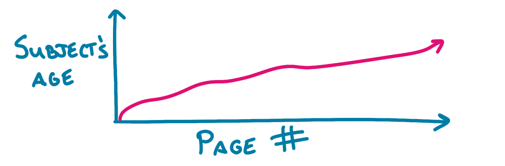

I prefer my biographies in chronological order, thank you very much
Mar 13, 2022 · 659 words · 4 minutes read
Usually, biographies go through someone’s story in roughly chronological order.
OK, that’s a little too linear, like a page-a-day journal for your entire life. Realistically, you’re going to focus on different parts of the subject’s life more than others.

You can imagine that broken up into chapters, too. Maybe our subject’s childhood is generally passed over in favor of the more interesting middle-life.
This general flow makes sense, because you can do some fun foreshadowing by mentioning things that happen in the subject’s future (orange in the diagram below), and you can remind the reader of things that happened in the subject’s past with past references (purple in the diagram below). This makes sense, since you, the reader, are generally learning about things in the subject’s life as they happen.
I recently read a biography of Thomas Edison that turned this model around. Each chapter was a decade of Edison’s life, but it was as if you chopped the chronological timeline into chunks and reversed them. Here’s what the contents page looks like:
You could imagine us drawing this like before, roughly like the following, where the first chapter was Edison as an old man and the last chapter is about the years following Edison’s birth.
If we drew in the line following from birth to death, we’d have to have these dotted line jumps from the end of the chapter to the beginning of the previous chapter:

This meant that those two I mentioned earlier, foreshadowing in orange (talking about events that happen later in Edison’s life) and past references in purple (talking about events that happened earlier in Edison’s life), looked a little odd, like the following:
This meant that some references to things in Edison’s past were actually pointers to later parts of the book, while some of the forward-looking foreshadowing referred to parts you had already read. Not all references were switched, though, since time progressed forward within each chapter.
This made for some initial confusion on my part when reading it at first. Edison would have a relationship with a person that I hadn’t met yet, or there would be a reference to a chronologically-earlier but book-later event that I didn’t yet know about. It also made the chapter transitions feel like sudden cuts, as you’d meander from 1900 to 1909 throughout the course of a chapter, then suddenly spring back to 1890 at the start of the next chapter, suddenly faced with making your way back towards 1899.
As much as I joke that a wayward junior editor mixed up the chapter order in the final manuscript right before it went to the printers, I do think this approach adds to the story in an interesting way. It was a little like learning about your grandparent’s early life, as they already exist in your mind as grown adults, but learning about their childhood adds depth beyond the adult you know. This nonlinear splitting also meant that some “foreshadowing” was even more interesting, as you could see the ripples of this curious young man’s mind having already flowed through to future inventions with his later life already established in your head.
Nonlinear storytelling can be such an interesting component of a story, where the jumbled timeline plays with our expectations of story and causality. Consider Memento or Slaughterhouse-Five and how their nonlinearity adds such depth and flavor. As dismissive as I may sound in the title, I do think this was an interesting approach I hadn’t seen much before (though I’m far from an expert in the art of biography), but in this case, I think I would have enjoyed this shift more if I had already read another detailed Edison biography. With my mind pre-seeded with the character list and the major events, it would have been easier to follow the threads and connect the dots.
I look forward to seeing how it feels when I come back to it in the future.